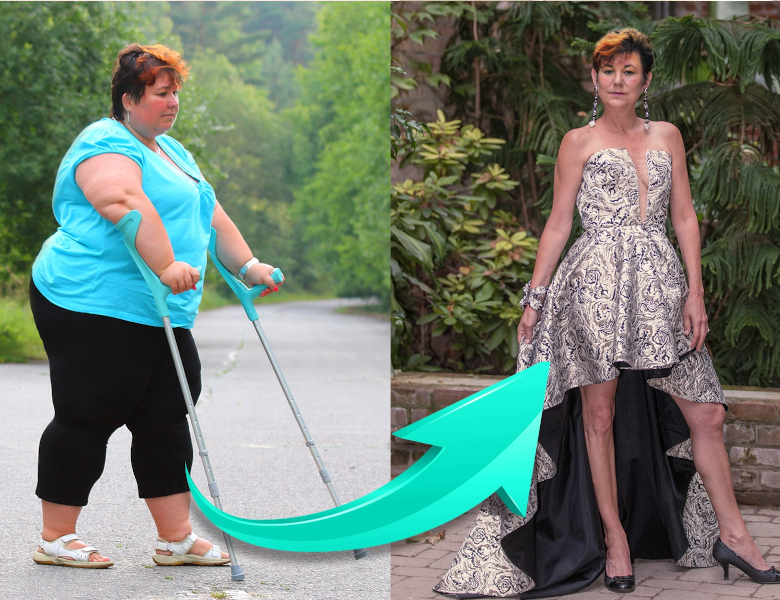
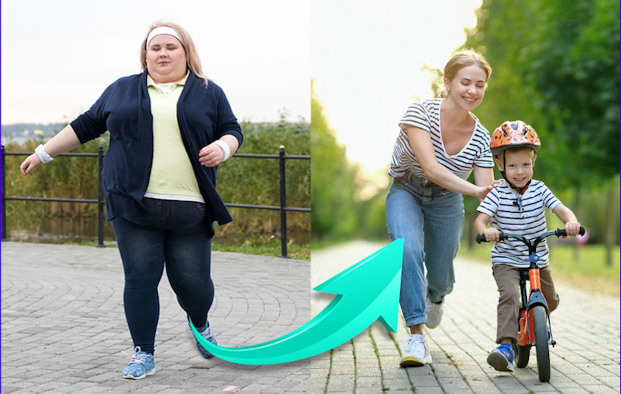
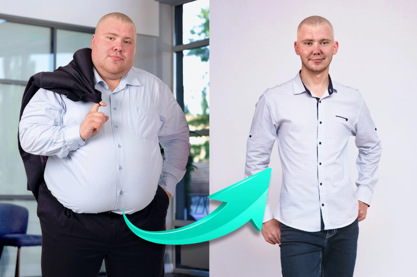
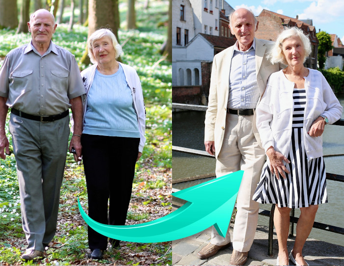
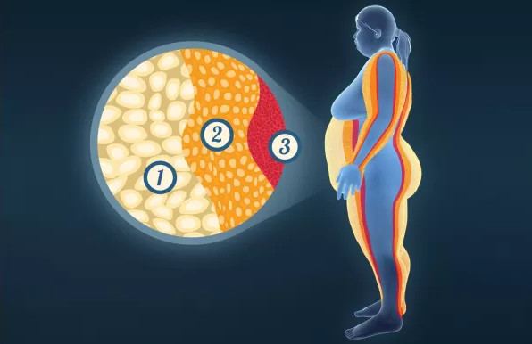
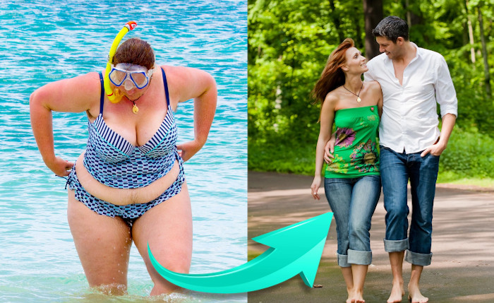
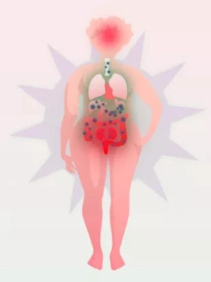
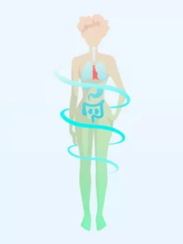
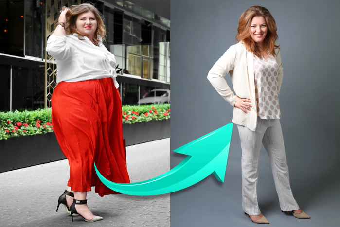
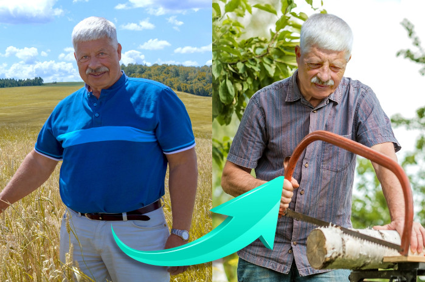

Bonjour, nous sommes Anna Ilieva (Bulgarie), Diego Jose Gutierrez (Argentine) et Keiichiro Sanaka (Japon).
Des professeurs de médecine de classe mondiale nous appellent " les jeunes héros qui ont inventé un antidote à l'obésité ". Nous en sommes très flattés. Mais nous sommes plus que flattés que grâce à nous, vous puissiez perdre l'excès de graisse. Et ainsi être en bonne santé et heureux.
Notre " antidote contre le surpoids " garantit une perte de poids de 7 kg en 2 semaines. Le plus important : vous perdez du poids sans changer votre alimentation et sans faire d'exercice. De cette façon, vous perdrez définitivement 10, 30, 50 kilogrammes et plus. Oui, comme Christina de Belmeken, qui avec notre thérapie a perdu... 100 kg !

J'étais si grosse que je ne voulais même pas quitter la maison parce que j'avais honte. Les enfants de la cour m'appelaient « éléphant ». Et leurs mères n'ont même pas fait de remarque, elles m'ont juste regardé avec dégoût. J'avais peur de mourir seule et de causer des problèmes aux enfants parce qu'ils auraient dû sortir mon cadavre par la fenêtre avec une grue. Je m'endormais tous les soirs avec cette pensée...
Et aujourd'hui ?
Je pèse 71 kg. Je suis heureux comme jamais. Et le plus important, je suis en bonne santé ! Je ne suis plus assis à la maison. Je passe du temps avec ma famille et mes amis. Et le plus drôle, c'est que mon ex-mari m'appelle tout le temps. Il veut qu'on se remette ensemble. Je ne sais pas si j'en ai envie, parce que je sors avec des hommes plus jeunes et plus beaux. C'est juste génial…
Kristina Benkova, 55 ans, Belmeken
En 7 mois, elle a perdu 102 kg !
❮
❯
Aujourd'hui, vous pouvez vous aussi perdre efficacement 10, 30, 50 kg et plus et vous assurer ainsi une vie saine et heureuse
Peu importe que vous soyez une femme ou un homme. L'âge n'a pas d'importance. Peu importe que vous soyez en surpoids depuis votre enfance ou depuis quelques mois. Peu importe la cause, qu'il s'agisse d'un penchant pour les sucreries, d'un travail sédentaire, d'une grossesse, de problèmes hormonaux, de la ménopause, de la prise de médicaments, etc...
Tout ce qui compte, c'est que vous voulez perdre du poids. C'est tout ce qui compte. Avec notre thérapie, vous y parviendrez rapidement, facilement et en toute sécurité. Peu importe.
• Si vous pesez maintenant 100 kg...
En 4 semaines, vous pèserez 86 kg et en 8 semaines 72 kg ! Nous vous garantissons que vous commencerez à perdre 7 kg toutes les 2 semaines. Ces effets sont confirmés de manière irréfutable par des études cliniques menées sur 27 000 hommes et femmes âgés de 18 à 98 ans.
• Si vous êtes préoccupé par votre santé...
...parce que vous avez un mauvais cholestérol ou une glycémie élevée, que vos articulations vous font mal, que vous n'avez pas d'énergie et que vous craignez que le surpoids ne raccourcisse votre vie... - en seulement 2 semaines, vous aurez des améliorations. Vous allez commencer à déborder d'énergie. Et après 4 semaines, rien ne vous fera plus mal. Vous cesserez de vous inquiéter pour votre santé et votre vie, car grâce à votre silhouette affinée et à votre meilleure santé, vous n'aurez plus aucune raison de le faire.
• Si vous aimez la bonne nourriture et ne pouvez pas faire de régime...
Vous n'avez pas à le faire du tout ! Ce n'est même pas conseillé. Vous pouvez manger ce que vous voulez, car les aliments que vous mangez n'affectent pas l'effet de la thérapie. Vous perdrez du poids sans faire de sacrifices. Comment ? Nous vous en dirons plus ci dessous.
• Si vous n'aimez pas l'exercice...
Ne les faites pas ! car, votre corps est surchargé par un poids supplémentaire. Ne commencez à faire de l'exercice que lorsque cela ne met pas trop à l'épreuve vos articulations et votre condition physique. Si vous voulez faire de l'exercice, faites-le après 2 ou 4 semaines, lorsque vous aurez perdu des kilos. Vous aurez alors plus de plaisir à faire les exercices.
• Si les gens se moquent de vous parce que vous êtes en surpoids...
Laissez-les rire. Ne perdez pas votre temps précieux à vous en inquiéter. S'ils sont si insignifiants qu'ils vous jugent sur les seules apparences, ils ne méritent pas du tout votre attention. En quelques semaines seulement, vous disposerez d'un corps mince, séduisant et surtout sain, qu'ils vous envieront !
• Si vous avez des complexes parce que vous êtes en surpoids...
...parce que vous avez de plus en plus de mal à trouver des vêtements adaptés ou que vous avez peur que votre partenaire ne vous aime plus - il suffit de vous donner un peu de patience et de faire des efforts. Enfin, vous porterez de beaux vêtements de quelques tailles inférieures à vos vêtements actuels et ils vous iront parfaitement. Votre partenaire cessera de regarder des femmes plus minces et tombera à nouveau amoureux de vous. Vous vous sentirez bien dans votre corps mince et vous serez heureux quand vous vous regarderez dans le miroir.
SANS GASPILLER VOTRE ARGENT

Une silhouette parfaite après la grossesse, même si vous aimez les sucreries !
Merci, merci, merci pour cette thérapie ! Je voulais absolument perdre du poids après la grossesse. Mais même avant elle j’étais déjà grosse... Il est naturel, lorsqu'une femme est enceinte, de ne pas se priver d'aliments savoureux. Vous devez faire attention à ce que vous mangez, en quelle quantité et à quelle heure. " Tout tourne autour du bébé ". Un très bon prétexte. Après la naissance de mon Sashko, j'étais en surpoids. Je n'ai pas pu les perdre en m'affamant, en faisant du jogging quotidien ou en prenant des thés brûleurs de graisse. Je pensais déjà que j'allais lutter avec mes énormes fesses et mon ventre pendant pour le reste de ma vie, jusqu'à ce que je tombe sur un article concernant cette thérapie sur un forum pour les mamans. J'ai tout de suite su que c'était celui qu'il me fallait !
Et j'avais raison ! Parce que Je ne surveillais pas ce que je mangeais, ni ne faisais d'exercice, et j'ai perdu 45 kilos ! Je suis cent fois plus énergique. Je suis si rapide dans mes tâches que lorsque mon mari rentre du travail, j'ai la force et l'envie de faire 10 km à vélo jusqu'à la maison de ma copine pour passer du temps ensemble. Lorsque j'emmène Sashko au jardin d'enfants ou que je vais avec lui à la cour de récréation, j'éclate de rire intérieurement ! Parce que je suis maigre, comme je l'étais au lycée, et que les mères des autres enfants ressemblent à de gros phoques. Je suis peut-être un peu méchante, mais j'aime le sentiment merveilleux d'être regardé avec envie.
Silvia Damyanova, 28 ans, Pernik
Perte de 45 kg en 13 semaines !
❮
❯
Comment avons-nous trouvé notre méthode automatique de perte de poids ?
Nous avons fait notre extraordinaire découverte lors d'une bourse de recherche à Singapour, à laquelle étaient invités 10 génies médicaux du monde entier. Nous admettons humblement être l'un de ces 10 génies.
Nous avons bénéficié de notre amour de la médecine, de notre approche novatrice du problème de l'obésité et de notre grande ténacité. Nous avons travaillé dur tous les jours pendant 17 mois. Nous avons risqué notre propre santé à cause de l'épuisement. Mais ce n'est pas important, car grâce à cela nous avons réalisé un miracle que la médecine n'a pas pu ou voulu réaliser pendant 45 ans.
Nous ne pouvions plus regarder les gens souffrir parce qu'ils étaient en surpoids
Pourquoi avons-nous décidé d'inventer un antidote à la surcharge pondérale ? Pour briser le domino de la mort ! Les gens deviennent gros et malades à un rythme extrêmement rapide en raison de leur surpoids. Et ce n'est pas du tout leur faute…
C'est la faute de l'environnement pollué dans lequel nous vivons. La faute est aux les aliments hautement transformés. La faute est aux problèmes hormonaux. La faute est au stress. La faute est à la vie trépidante. La faute est au travail sédentaire. La prise de poids est une conséquence de la grossesse ou de la ménopause. Il y a de nombreux facteurs, mais ce n'est pas important maintenant. Ce qui est important et extrêmement triste c'est la façon dont les autres traitent les personnes en surpoids...

Je suis mince pour la première fois de ma vie
J'étais potelé à la maternelle. J'ai toujours eu de l'appétit, pour le plus grand plaisir de ma grand-mère, qui m'a élevé et nourri avec des aliments gras. Mais comme à la maison j'étais le plus beau, à l'école on me traitait de gros. Toute ma vie, j'ai été un outsider à cause de mon poids. Je n'étais pas en forme. Il me juste suffisait de courir jusqu'au bus et je commençais à transpirer grosses gouttes. Les gens me regardaient fixement. Ma vie était insupportable.
Dieu merci, un de mes amis m'a recommandé cette thérapie (son père l'a utilisée et en a fait l'éloge). J'ai essayé et j'ai littéralement perdu du poids sous mes yeux. Même maintenant, quand je me réveille le matin, J'ai du mal à croire que je suis la personne mince que je vois dans le miroir. J'ai finalement trouvé le courage devant les filles. Je sors avec Katya depuis 2 mois. J'espère que quelque chose de sérieux sortira de tout ça. Mais le plus important, c'est que lorsque je vais chez ma grand-mère, je ne la rende pas triste en lui refusant de la nourriture. Parce que grâce à la thérapie, je ne deviendrai pas gros !
Adrian Nikolov, 35 ans, Vidine
Perte de 61 kg en 4 mois !
❮
❯
Nous ne sommes pas d'accord pour que les personnes en surpoids soient traitées de gloutons paresseux
La grand-mère d'Annie a eu du diabète à cause de son surpoids et a quitté ce monde prématurément...
– Ma grand-mère était-elle paresseuse ? A-t-elle trop mangé ? Était-elle repoussante ? Absolument pas ! C'était une belle femme parce qu'elle avait un cœur gentil et aimant. Elle n'a jamais été paresseuse. Soit elle travaillait dans le jardin, soit elle préparait les repas pour toute la famille, soit elle s'occupait charitablement des enfants handicapés au centre médical. Elle était très active physiquement ! Et elle ne mangeait jamais trop - dit Annie - elle a même essayé de perdre du poids et ne mangeait que 3 pommes par jour ! Rien n'a aidé.
Le père de Diego est mort d'une crise cardiaque causée par un excès de poids...
– Mon père travaillait physiquement dans une usine. Il soulevait tout le temps des objets lourds. Chaque jour à son travail était comme une séance d'entraînement intense à la salle de gym. Cependant, il avait 30 kg de trop. Il est même allé voir des nutritionnistes, mais ils ne l'ont pas aidé. Qu'est-ce que je n'aurai pas donner pour découvrir plus tôt cet antidote contre l'obésité. Papa aurait été avec nous aujourd'hui - admet tristement Diego.
L'obésité de Keiichiro est héréditaire...
– Toute ma famille consulte des médecins, des nutritionnistes et des entraîneurs depuis des années. Et pendant des années, rien n'a fonctionné, absolument rien. Qu'en est-il du fait que maman cuisinait TOUJOURS des repas diététiques : riz, légumes vapeur et viande sans matière grasse ? Mais nous avons tous pris du poids comme si nous mangeons 10 hamburgers avec des frites ! C'est pourquoi j'ai décidé d'étudier et de faire quelque chose moi-même pour sauver la vie de mes proches - dit Keiichiro.
Vous êtes belle et méritez le respect quel que soit votre poids
Partout dans le monde, les gens se moquent de ceux qui sont visiblement en surpoids. Nous ne sommes pas d'accord avec cela ! Souvent, les personnes en surpoids sont meilleures que les personnes minces. Parce qu'elles savent ce que c'est que d'être mis à l’écart ou d'être ridiculisé. Ils sont donc plus chaleureux et plus compréhensifs. Ce sont de très bons amis.
90, 120, 150, 180kg ? Ces chiffres ne s'appliqueront pas à vous ! Votre vrai Vous est là-dedans, juste caché sous une couche de graisse mortelle…
Vous devez vous débarrasser de cette couche de graisse non pas pour faire plaisir aux autres, mais pour préserver votre santé, voire sauver votre vie. Le fait est que le surpoids raccourcit votre vie de 12 ans en moyenne. Mais il ne doit pas en être ainsi. Ça NE PEUT PAS être comme ça !

Un état idéal dans la vieillesse !
Mon mari et moi étions en surpoids de plus de 30 kg et donc en mauvaise santé. Avec la vieillesse, il devient de plus en plus difficile de supporter le poids excessif. J'ai développé des problèmes d'articulations (genou et hanche), ma glycémie était trop élevée et Pétio a souffert d'athérosclérose. Chaque jour, il se plaignait qu'il allait avoir une crise cardiaque. Le médecin du centre médical nous a dit de perdre du poids et de bouger. Nous avons essayé un peu, mais cela n'a pas beaucoup aidé. Notre petite-fille Monika, dès qu'elle a entendu, a immédiatement commencé à chercher sur Internet des moyens de perdre du poids et a trouvé cette méthode.
Quel miracle ce fut ! Ça a marché de la même façon pour moi et pour Pétio. Nous avons perdu du poids kilo par kilo si rapidement et facilement que nous ne pouvions pas y croire. J'ai dû rétrécir tous mes vêtements à la machine ! Mais c'est mieux ainsi, car maintenant nous sommes aussi maigres et vigoureux que dans notre jeunesse. Le médecin était stupéfait et a ri sincèrement en disant qu'elle était fière de tels patients.
Haline et Pierre Markovi, 72 et 75 ans, Blagoevgrad
Perte de 21 et 26 kg en 10 semaines !
❮
❯
Ils se sont moqués de nous quand nous avons commencé à travailler dans le laboratoire...
D'autres " jeunes génies " invités à une bourse de recherche médicale à Singapour ont décidé de travailler sur des traitements pour des maladies telles que le diabète, l'athérosclérose, la dégénérescence des articulations et de la colonne vertébrale. Quand nous avons entendu cela, nous avons serré les dents de colère.
Après tout, toutes ces maladies sont causées par le surpoids ! Après tout, il est simple et logique de combattre les causes, pas les conséquences ! Les gens devraient être en bonne santé grâce à un poids sain, et non se gaver de produits chimiques pour guérir les maladies dues au surpoids.
Nous avons décidé de tout faire pour trouver un antidote à l'obésité. Nous avons travaillé dur tous les jours. Nous avons été réprimandés à plusieurs reprises pour être restés dans le laboratoire la nuit, alors que l'accès en est interdit. Nos recherches avançaient si bien que nous n'arrivions pas à dormir tant nous étions excités. Nous devions continuer à travailler !
Nos recherches, qui ont duré 17 mois, ont révolutionné la façon dont nous abordons la perte de poids et le problème de surpoids. Nous avons découvert un certain nombre de dépendances dans le fonctionnement du métabolisme humain qui n'avaient pas été remarquées par d'autres scientifiques auparavant. Lorsque nous avons commencé nos recherches, nous avons supposé que...
Même une personne de 200 kg est mince à l'intérieur
Si vous faites un scanner de votre corps, vous verrez à l'écran une silhouette normale et élancée. Vous pouvez facilement vous en rendre compte en appuyant plus fort sur l'abdomen, les bras ou les jambes. La résistance élastique que vous ressentirez est un tissu adipeux inutile.
Sur un corps mince, vous portez une carapace de graisse lourde et inutile. Elle a une épaisseur de quelques centimètres à plusieurs dizaines de centimètres, selon l'importance de l'excès de poids. Il pèse de quelques à plusieurs dizaines de kilogrammes. La bonne nouvelle, c'est qu'à l'intérieur, vous avez un corps séduisant avec une silhouette parfaite. Il est caché sous une enveloppe de graisse. Il suffit de retirer l'enveloppe. Nous savons comment faire !
Les graisses ne sont pas toutes identiques
Le tissu adipeux n'est pas un tissu uniforme. Voyons cela de plus près. Le moniteur médical montre que la couche graisseuse est composée de 3 couches.

Il s'agit de la couche externe, située immédiatement sous la peau et composée de 57 % d'eau. C'est exactement ce que sont la cellulite et la peau flasque et gélatineuse.
C'est la couche intermédiaire, semblable au beurre ou au lard. C'est toujours le plus lourd et c'est là que les toxines sont stockées provoquant stress, fatigue et problèmes de peau.
Fossile de graisse - c'est le véritable ennemi auquel vous devez faire face !
C'est la couche intérieure. C'est le plus fin, mais en même temps le plus dense et le plus dur, comme la semelle d'une chaussure. Il est très difficile de s'en débarrasser. Elle est à l'origine de l'effet yo-yo. Comment cela se passe-t-il ? Même si nous parvenons à perdre du poids, le fossile " veut " se recouvrir de nouvelles couches de graisse et il le fait rapidement.
Grâce à nos études cliniques portant sur 9 mille personnes obèses, nous avons clairement démontré que les méthodes d'amaigrissement connues jusqu'à présent n'agissent que sur la deuxième couche de l'enveloppe graisseuse, c'est-à-dire le mucus gras. C'est une route qui ne mène nulle part.
La véritable raison de l'effet yoyo
En perdant du poids avec un régime et de l'exercice, vous brûlez quelques kilos de mucus gras, mais les fossiles gras restent intacts Dès que vous reprenez votre mode de vie normal, les fossiles gras contre-attaque ! Il stimule la croissance rapide du mucus gras. C'est l'effet yo-yo, qui annule les résultats de vos efforts et provoque une prise de poids rapide, encore plus rapide que la perte de poids.

J'ai surmonté mes complexes et trouvé l'amour
J'ai essayé de perdre du poids exactement 17 fois dans ma vie. J'ai essayé les regimes - aucun effet. Régime au chou, régime Dukan, régime de nettoyage, régime cétogène. Tout essayé - aucun effet. J'étais désespérée parce que mes complexes ruinaient toutes mes relations. J'étais jaloux de mes partenaires, je me plaignais de mon apparence... Je n'aurais jamais pensé qu'après toutes ces années de torture je perdrais du poids en prenant des gélules naturelles. J'ai été choquée !
Acheter des vêtements n'est plus une torture car tous les magasins ont ma taille S ou M ! !! Je n'ai pas honte de la façon dont les gens me regardent quand je suis en vacances. Un changement à 180 degrés, en effet. Je me sens 100% féminine, complète et digne de l'attention masculine. Je n'ai pas peur que mon petit ami me trompe avec une fille mince. Parce que je suis la fille mince ! Et mon petit ami actuel m'a récemment demandé en mariage. J'adore ma vie !
Galya Manéva, 41 ans, Ihtiman
Elle a perdu 38 kg en 13 semaines !
❮
❯
Brisez la fossilisation des graisses d'un seul coup et vous ne vous inquiéterez plus jamais de votre surpoids
Le fossile gras - c'est votre véritable ennemi. Si vous ne vous en débarrassez pas, vous ne vous débarrasserez jamais de l'excès de poids. Vous ne pouvez vous débarrasser du fossile gras qu'avec notre thérapie car c'est nous qui avons découvert le fossile gras. C'est nous qui avons prouvé son existence, fait des recherches et trouvé le seul moyen de s'en débarrasser. Quel en est le principe de fonctionnement ? ?
Combustion rapide et automatique des graisses
Grâce à la décomposition du fossile gras, le mucus gras " perd littéralement du terrain ". Il n'a rien à quoi s'attacher, alors il brûle. Grâce à cela, la couche de graisse diluée disparaît également très rapidement - vous vous débarrassez de la cellulite en quelques jours seulement en appliquant la thérapie.
Débarrasser le corps des toxines
Lorsque, à la suite de la dégradation du fossile gras, le mucus gras est brûlé, l'organisme est débarrassé des toxines qu'il contient. Grâce à cela, vous dormez mieux, vous avez plus de force et d'optimisme. Votre peau, vos cheveux et vos ongles sont régénérés et nourris. L'effet porte sur la santé et la beauté.
Protection contre l'effet yo-yo
Et surtout : la dégradation des graisses fossiles évite l'effet yo-yo. Cela signifie qu'une fois que vous perdez du poids, vous n'en reprendrez plus jamais. La recherche montre clairement que lorsque le fossile de graisse est décomposé, le corps supprime la mémoire des cellules graisseuses. Il oublie simplement comment déposer la graisse sur le ventre, les cuisses, les fesses et tout le corps. Votre métabolisme s'accélère, vous pouvez donc manger ce que vous voulez sans prendre de poids. Génial, n'est-ce pas ?


Un corps envahi par la graisse, chargé de toxines, sans énergie.
Un corps mince et sain, exempt de toxines, plein d'énergie.
Votre corps est déjà en forme
Et comment ! Il transporte les kilos superflus tous les jours. C'est comme prendre 2 barils d'eau et les transporter toute la journée. Sans les poser au sol une seconde. Aucun athlète ne peut porter le poids que les personnes obèses portent chaque jour. Et ce depuis des années !
Notre thérapie ne fonctionne que sur les graisses. Et plus précisément - il ne brûle que les graisses sans brûler les muscles. Ce point est très important. De cette manière, vous dévoilez simplement votre corps déjà athlétique. Vous aurez non seulement une silhouette attrayante, mais aussi des muscles sculptés, de l'activité et de la force.
Vous n'avez pas besoin de transpirer dans la salle de gym. Vous avez déjà en vous un corps sain. Il suffit d'ôter la couche de graisse. Avec notre thérapie, vous éliminerez la couche de graisse aussi facilement et rapidement que vous enlevez votre peignoir.

Cette perte de poids s'est faite en un claquement de doigts ! J'ai commencé à prendre les gélules le premier jour de mes vacances. Quand je suis retourné travailler au bureau après 2 semaines, tout le monde était étonné. Mon patron m'a même appelé à part et, sérieusement inquiet, m'a demandé si je ne souffrais pas d'une maladie grave, puisque j'avais perdu du poids si rapidement. Il a poussé un soupir de soulagement lorsque je lui ai parlé de la thérapie et du fait que je me sentais bien ! Il m'a salué et m'a demandé des gélules pour sa fille qui prend du poids à cause de la prise de stéroïdes. La thérapie a également aidé la fille de mon patron (elle a perdu du poids jusqu'à son poids normal) et maintenant elle me doit une faveur !
Desislava Yosifova, 37 ans, Sofia
Elle a perdu 22 kg en 7 semaines !
❮
❯
Des plantes qui décomposent les fossiles gras d'un seul coup
Depuis des centaines d'années, le véritable antidote à l'obésité est à portée de main, dans les plantes. Ces plantes poussaient sans être dérangées sur Terre, attendant juste que quelqu'un leur prête enfin attention. Il suffisait de les combiner et de les laisser agir. Il suffisait de vouloir vraiment libérer l'humanité du surpoids…
Lorsque nous avons commencé notre travail, nous avons sélectionné plus de 100 plantes et les avons soigneusement testées. Au cours de la recherche, nous avons sélectionné les extraits les plus efficaces. Chacune d'entre elles, individuellement, a donné des effets similaires à ceux de l'exercice et du régime. Cela ne suffisait pas.
L'action des extraits individuels peut être comparée au travail d'un mineur chargé de creuser seul un tunnel à travers une grande montagne. Il aurait réussi, mais ça lui aurait pris une vie entière. Pour creuser un tunnel à travers une montagne, il faut une énorme machine qui peut accomplir la tâche en quelques jours.
Notre thérapie est juste une énorme machine qui creuse à travers l'énorme montagne de l'excès de poids.
Son efficacité réside dans l'association d'extraits de plantes uniques provenant des 4 continents. Les ingrédients combinés agissent avec 100 fois plus de puissance. Pour un fossile gras, cette combinaison est une surprise. Elle ne se défend même pas, mais cède simplement et libère le corps de l'excès de poids !
Une action à la racine du problème
Une autre décision importante a été la forme de notre traitement de l'obésité. L'exercice, les régimes, les lotions brûle-graisses et les patchs transdermiques ne fonctionnent que sur le mucus gras ou la graisse diluée. C'est-à-dire ceux qui brûlent rapidement, mais s'accumulent encore plus vite et avec une double puissance.
C'est pourquoi nous avons misé sur des capsules naturelles pour agir à la racine du problème. Très concentrés, ils décomposent la fossilisation des graisses dans l'organisme.
" Une percée historique dans la médecine "
C'est ainsi que des professeurs de médecine de renommée mondiale appellent notre méthode de perte de poids. Pourquoi ?
Entraîne une perte de poids de 7 kg en 2 semaine - lorsque vous utilisez notre méthode, la perte de poids est 12 fois plus rapide qu'avec un régime strict à des entraînements quotidiens.
Il est naturel et sûr - il ne contient que des ingrédients naturels qui sont sans pitié pour la fossilisation des graisses, mais délicats pour le système digestif. Ils sont compatibles avec tous les médicaments et ne provoquent pas d'allergies.
Cela ne nécessite pas de changement de régime alimentaire - c'est même interdit ! Le régime ralentit le métabolisme, ce qui n'est pas recommandé pour perdre du poids. Notre thérapie fonctionne plus habilement, détruisant l'ennemi de votre silhouette mince - le fossile gras.
Cela ne nécessite pas d'effort physique - vous pouvez faire du sport pendant la thérapie, mais ce n'est pas obligatoire. La perte de poids ne dépend pas de l'activité physique. Vous pouvez vous asseoir devant la télévision et toujours obtenir des résultats garantis.
Vous ne paierez pas de grosses sommes - les milliers d'euros que vous auriez dépensés pour un nutritionniste, une salle de sport, des thés et des compléments alimentaires pour perdre du poids restent dans votre poche.
Et surtout : la thérapie a été créée sur la base des dernières recherches, confirmées sans aucun doute par 7 instituts de recherche du monde entier.
Efficacité en permanence et dans toutes les conditions
Voici des tableaux basés sur nos recherches et celles de centres de recherche au Japon, aux États-Unis, au Canada, en Écosse, en France, en Suisse et en Norvège. Les résultats présentés incluent un total de 27 000 femmes et hommes âgés de 18 à 98 ans.
Perte de poids moyenne en 2 semaines selon l'âge :
Les résultats des études montrent sans équivoque que la thérapie a un effet amincissant quel que soit l'âge, les meilleurs résultats étant les personnes âgées de 40 à 59 ans.
Perte de poids moyenne en 2 semaines par profession :
Travail assis
(bureaux, administration)
Travail où l'on reste longtemps debout
(boutiques, restaurants)
Travail physique
(construction, services de courrier)
Les résultats de l'étude prouvent sans équivoque que la thérapie aide à la perte de poids indépendamment du niveau d'activité physique associé à la profession.
Perte de poids moyenne en 2 semaines selon le sexe :
Les résultats de l'étude prouvent sans équivoque que la thérapie favorise la perte de poids quel que soit le sexe. Les femmes perdent du poids un peu plus vite que les hommes.

Je mange ce que je veux et je n'ai pas de ventre !
J'ai déjà été déçu à plusieurs reprises par diverses publicités et recommandations d'amis. Et là, j'étais résolument CONTRE. Mais mes filles ne voulaient pas me laisser tranquille et m'ont dit de prendre ces gélules si je ne voulais pas manger de salades. J'ai commencé à les prendre pour qu'elles me laisse tranquille. Les ingrédients sont naturels, donc je me suis dit qu'ils ne me feraient pas de mal et que mes filles comprendraient que les gélules n'en valent pas la peine. Cette fois, exceptionnellement, je me suis trompé. Mon ventre a littéralement disparu en une semaine. Pour être honnête, je me sens beaucoup mieux. Je joue même au foot avec mes petits-enfants sans m'essouffler. Je mange comme je veux. Très merveilleux.
Mariane Pavlov, 66 ans, Varna
Perdu 17 kg en 5,5 semaines !
❮
❯
Regardez comme c'est facile
Vous n'êtes pas obligé de ne manger que des pommes, des carottes et de la laitue pendant des mois. Vous n'avez pas besoin de vous torturer à la salle de sport. Vous n'avez même pas besoin de quitter la maison. Vous pouvez manger ce que vous voulez. Vous n'avez pas besoin de bouger. Vous ne changez absolument rien à votre quotidien. La façon de commencer à perdre 7 kg en 2 semaines est très simple. Comment se passe la thérapie ?
Vous prenez simplement 1 à 2 gélules par jour, selon les recommandations du consultant. Il peut être pris à tout moment avant le petit-déjeuner ou avant le déjeuner. À boire avec un verre d'eau. Et c'est tout. Ne vous inquiétez de rien. Vous vivez votre vie comme avant et votre corps devient une machine à brûler des calories. Le fossile gras se décompose pour enfin révéler la silhouette mince et séduisante que vous avez en vous !
Voyez à quel point c'est sûr
Vous n'êtes pas à risque de malnutrition ou de faiblesse comme avec les régimes. Vous n'êtes pas à risque de blessure articulaire ou d'arythmie comme avec l'entraînement. Vous ne ressentirez aucun effet secondaire. Pourquoi ?
La thérapie est 100% naturelle. Son utilisation est compatible avec tous les médicaments, n'irrite pas le système digestif et ne provoque pas d'allergies. Tout cela est dû à la forme de capsules naturelles. L'enveloppe de la capsule est conçue pour être totalement non invasive pour le corps. Tout comme l'eau.
Certains nous appellent " héros " et d'autres " perdants "
Oui, les perdants... Et c'est uniquement parce que nous avons déjà aidé 27 000 personnes à perdre du poids sans gagner d'argent grâce à notre découverte. Ensemble, nous avons décidé qu'au moment où le fléau de l'obésité fait des victimes dans le monde entier - nous ne gagnerons pas d'argent en vendant notre thérapie automatique de perte de poids. Nous avons décidé de le mettre à la disposition des gens sans être payé pour cela. En six mois, 27 000 personnes en ont déjà bénéficié, et cela nous rend très heureux.
Malheureusement, après la vente du brevet, la thérapie deviendra 10 fois plus chère. C'est pourquoi nous voulons que tous ceux qui en ont besoin reçoivent la thérapie avant de vendre le brevet. C'est pourquoi nous vous exhortons à agir MAINTENANT !
Vous ne risquez rien !
Nous avons appelé notre thérapie automatique de perte de poids . En décidant de l'essayer, vous ne risquez rien. Parce que vous êtes protégé par la Triple Garantie de Satisfaction, qui comprend : Garantie d'Originalité, Garantie de Qualité et Garantie de Satisfaction.
-
Produit original avec certificat - vous pouvez être sûr que vous obtiendrez le produit original qui n'est disponible que sur ce site Web.
-

Qualité confirmée par la recherche - grâce à la méthode de fabrication avancée, la thérapie répond aux normes de qualité les plus élevées. Tous les ingrédients sont à100% sans danger pour la santé.
-
L'efficacité a été confirmée par 27 000 utilisateurs - de nombreux tests de laboratoire et d'utilisateurs confirment également l'efficacité extrêmement élevée de la thérapie.
Parce que la vie est trop belle pour être écourtée par un excès de poids ou des complexes...
Pas besoin de souffrir, même pour un instant. Traitez la fossilisation des graisses et protégez votre santé. Vous ne risquez rien. Vous n'avez absolument rien à perdre. La seule chose que vous pouvez perdre, c'est 20, 50 et même 100 kg de poids en trop. Vous gagnez une silhouette attrayante, beaucoup d'énergie positive et une excellente santé.
Vous êtes maintenant confronté à 1 choix facile :
Continuer à souffrir à cause de l'enrobage graisseux de votre corps, se tourmenter avec des complexes et risquer sa santé...
Saisissez la chance qui vous est offerte MAINTENANT !
Désintégrer le fossile gras et retirer l'enveloppe graisseuse. C'est facile ! Il suffit de remplir le formulaire ci-dessous, ce qui vous prendra 2 minutes et... après seulement quelques jours, vous commencerez à perdre du poids.
Réalisez votre rêve d'un corps mince et sain !
Merci d'avoir lu notre message. Si vous profitez de notre thérapie, après quelques semaines, en tant que personne mince et en bonne santé, vous vous souviendrez de ce jour avec un sourire et penserez : " C'est le jour qui a changé ma vie... ".
Nous vous souhaitons une bonne santé et le bonheur !
Annie, Diego et Keiichiro